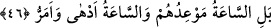
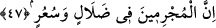
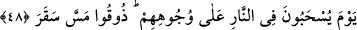

46. Bilakis kıyâmet onlara vaadedilen asıl saattir ve o saat daha belâlı ve daha
acıdır.
Bu (bozgun), cezâlarının tamamı değildir. Aksine kıyâmet onların asıl azaplarının
vaadedildiği zamandır. Bu, o azabın başlangıcıdır. Kıyâmet anlamındaki “sâat” kelimesi
daha önce geçtiğinden burada zamir olarak gelmesi gerekirken açık isim olarak
getirilmesi kıyâmetin tehlikelerinin büyüklüğünü göstermek içindir. Âyet-i kerîme’de
geçen “edhâ”, kelimesi belânın en şiddetlisi ve en büyüğü, “dâhiye,” kurtulma yolu
olmayan en büyük belâ demektir. “Emerr,” acılığın en son ve en şiddetli sınırı
anlamındadır. Bundan elde edilen mânâ: Kıyâmetin içinde bulunmak, Bedir savaşı
içinde bulunmaktan daha korkunç ve tehlikelidir, azabı da Bedir azabından daha ağır ve
daha büyük bir beladır. Çünkü yenilmek, öldürülmek ve esir düşmek gibi dünyanın belâ
ve azabı, âhiret azâbından sadece bir örnektir. Nitekim dünya ateşi, âhiret ateşinin
yalnız yetmişte birinin bir parçasıdır.
47. Şüphesiz suçlular sapıklık ve çılgınlık içindedirler.
“Şüphesiz suçlular” önceki ve sonraki müşrikler, “sapıklık ve çılgınlık
içindedirler.” Yâni mahvolma ve çılgın ateşler içindedirler.
48. O gün yüzüstü ateşe sürüklendiklerinde «Cehennemin elemini tadın!» denir.
Âyette geçen “sekar” kelimesi, Cehennem’in özel adıdır. Bunun için türetilmemiştir.
Cehennemin beşinci tabakasının adı olduğu da söylenmiştir. Âyet-i kerîme’nin mânâsı;
cehennem ateşinin sıcaklığını ve can yakıcılığını varın siz kıyaslayın. Cehennem ateşine
dokunmak bile elem ve ızdırap duymaya sebeptir. Sekarın dokunması, onun acıtıcılığını
ve elemini duymaktan mecazdır.
Kâmûs’ta şu kaydedilmiştir; “Sekar” adlı Cehennemin dokunuşunu tadın. Yâni ondan
size ilk dokunacak olanı tadın, anlamındadır. “Sıtmanın dokunuşunu duydu” sözünde
olduğu gibi.
Peygamber (s.a.)’den rivâyet edildiğine göre şöyle buyurmuştur: “Kıyâmet günü
haklarında ilk hüküm verilecek olan insanlar şunlardır: Şehid olmuş biri getirilir.
Allah ona vermiş olduğu nimetlerini tanıtır, bildirir. O da onları hatırlar. Bu
nimetlere rağmen ne yaptın? diye sorulur.